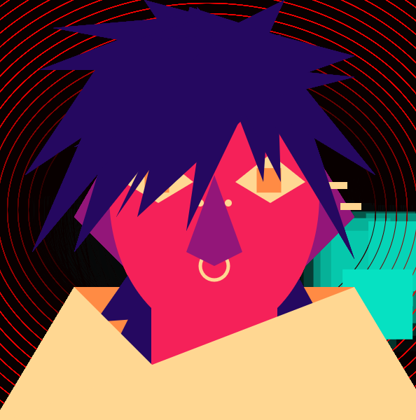
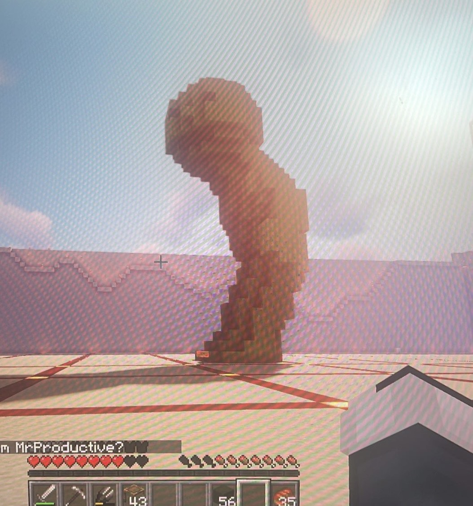
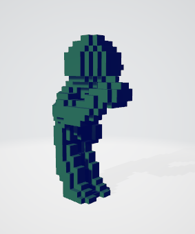
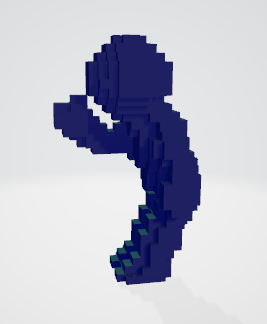
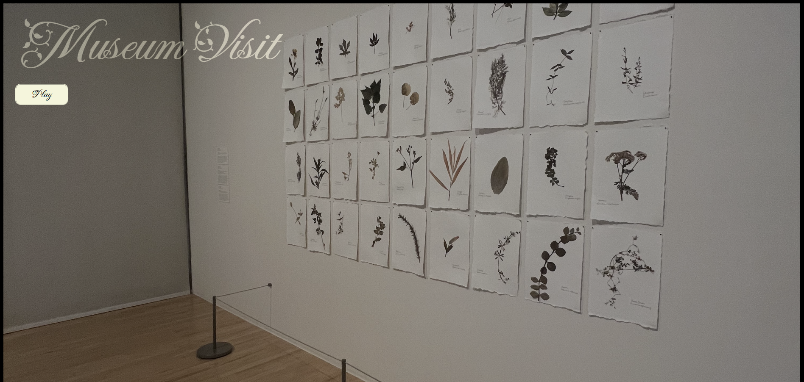
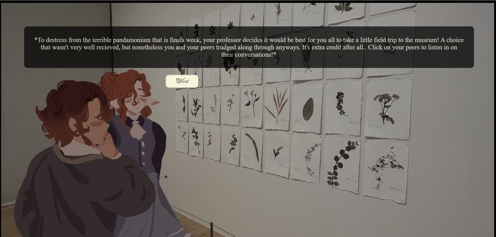
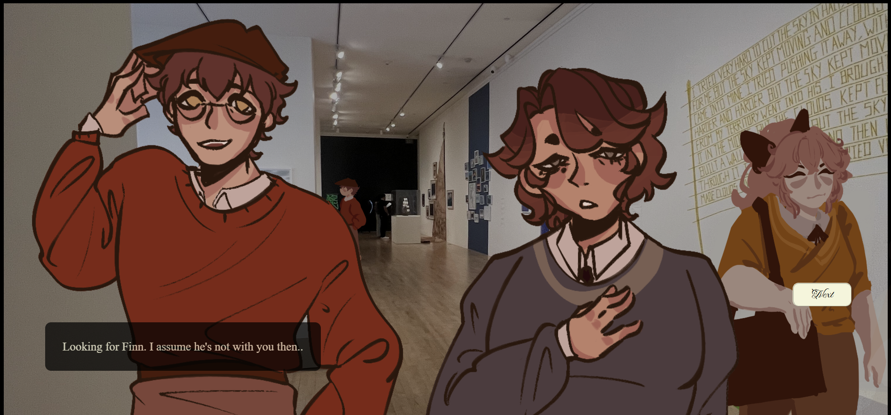

Art 74 & 75 Works!
These digital illustrations were taken and glitched using Notepad ++ and Audacity to achieve different effects that mimic disrupted analog techniques. The first image is meant to mimic a multiple exposure effect much like in photography or the equivalent of a corrupted file; while the second image mimics a failing film reel.









